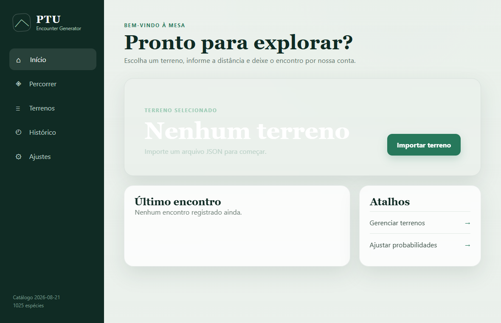
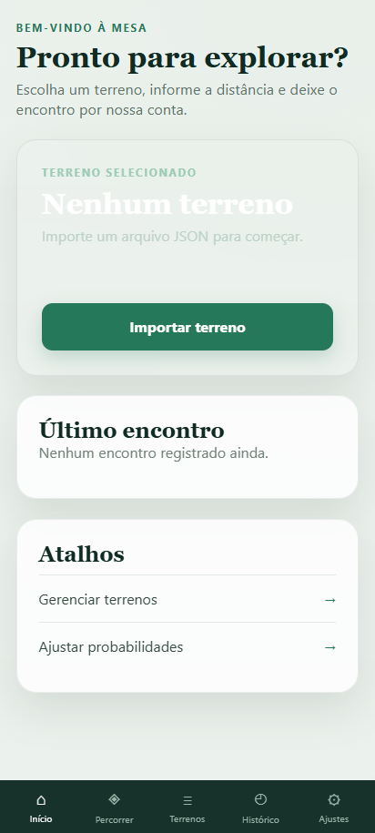
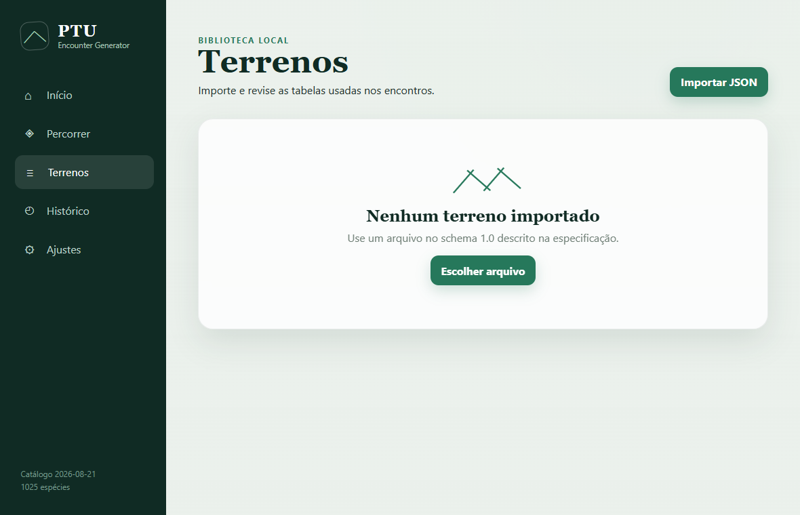
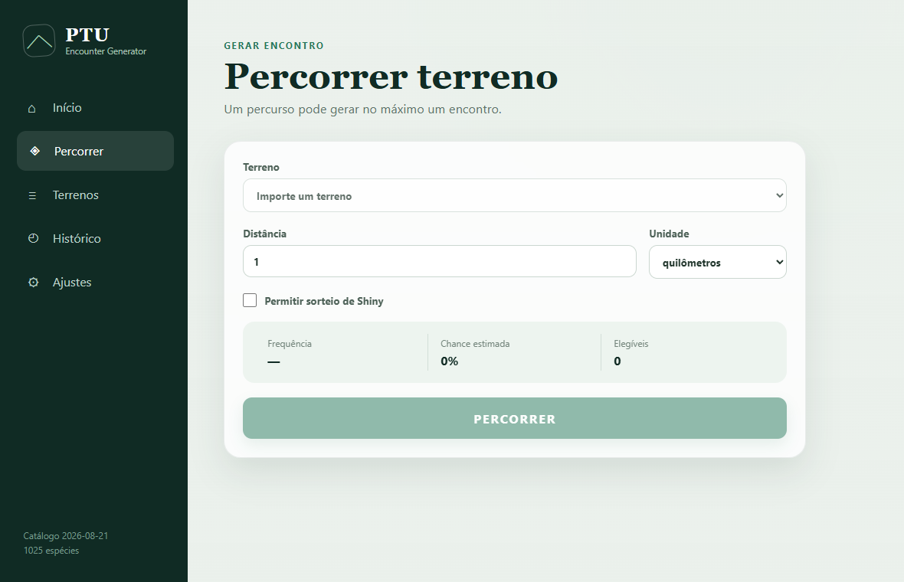
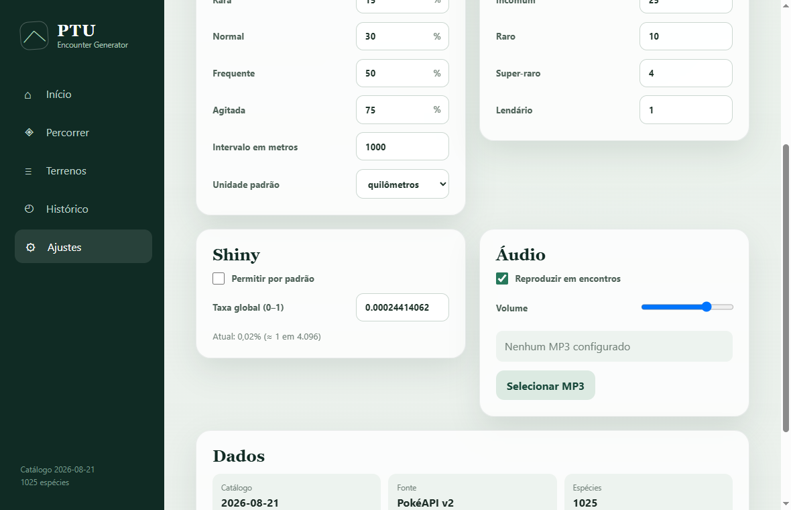
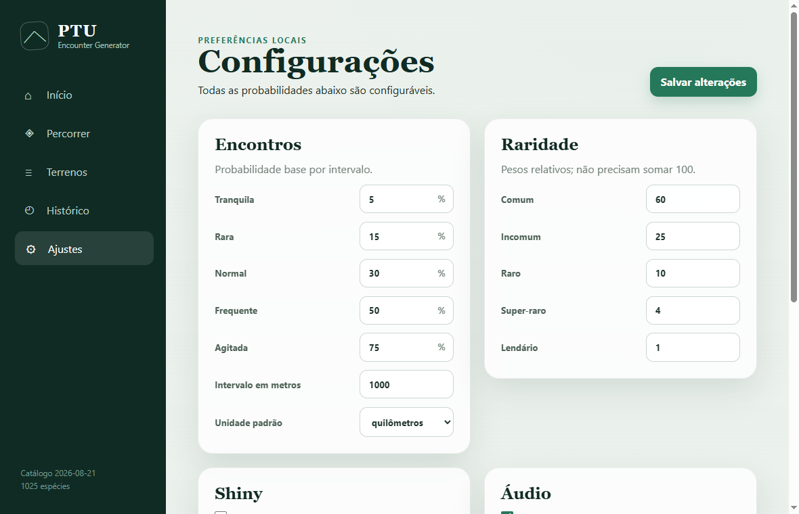

Manual para iniciantes
Como importar terrenos, gerar encontros, configurar música e criar seus próprios arquivos JSON — sem precisar saber programar.
Windows + Android · versão 0.1.2Comece por aqui
O PTU Encounter Generator sorteia encontros para sessões de Pokémon Tabletop United. Você informa o terreno e a distância percorrida; o programa decide se houve encontro e, quando houver, sorteia Pokémon, nível, sexo, Nature e Shiny.
pokemon-yellow-route-1.json.1 · Interface


Resumo rápido e atalhos.
Realiza o sorteio do encontro.
Importa, valida e exclui JSONs.
Guarda encontros já gerados.
Probabilidades, Shiny e áudio.
Comece sempre por Terrenos.
2 · Terrenos

1 2Toque no menu Terrenos.
Toque em Importar JSON e selecione um arquivo terminado em .json.
O programa mostra nome, quantidade de Pokémon, avisos e erros.
Se não houver erros, toque em Confirmar importação.
O terreno importado passa a ser o terreno ativo.
Importar outro JSON com o mesmo nome oferece a opção de substituir o anterior.
3 · Encontros

1 2 3 4Nenhum encontro: o sorteio não passou na chance calculada. Tente outro percurso.
Um encontro: aparece uma ficha com espécie, nível, sexo, raridade, Nature e possível Shiny.
Importante: cada percurso gera no máximo um encontro.
4 · Áudio

1 2 3No Android, baixe pelo Telegram ou salve em Downloads.
Role até a seção Áudio.
Toque em Selecionar MP3 e escolha o arquivo.
Depois de armazenado, use o botão Testar.
Defina o volume e deixe Reproduzir em encontros marcado.
Toque em Salvar alterações após mudar volume ou preferências.
5 · Histórico e ajustes
Cada encontro bem-sucedido é armazenado com data, terreno, Pokémon, nível, Nature, chance e indicação de Shiny.
Excluir um terreno não apaga os encontros antigos que já foram registrados.
Terrenos, configurações, histórico, música e imagens em cache ficam no dispositivo. Não é necessário criar conta.
Desinstalar o aplicativo pode apagar esses dados.

Cada frequência possui uma chance base por intervalo. Nos valores iniciais:
| JSON | Na tela | Chance |
|---|---|---|
uneventful | Tranquila | 5% |
rare | Rara | 15% |
normal | Normal | 30% |
frequent | Frequente | 50% |
eventful | Agitada | 75% |
6 · JSON sem mistério
JSON é texto com nomes e valores. Chaves { } formam blocos; colchetes [ ] formam listas; textos usam aspas duplas.
"name".0.5, nunca 0,5.true, false e null não usam aspas..json.floresta-viridiana.json. Isso evita salvar acidentalmente como .json.txt.7 · Modelo pronto
Pidgey aparece nos níveis 2–7 e Rattata nos níveis 2–4. As categorias common e unusual aproximam a proporção original de 70% e 30%.
{
"schema_version": "1.0",
"terrain": {
"name": "Pokémon Yellow — Rota 1",
"min_lvl": 2,
"max_lvl": 7,
"encounter_frequency": "normal",
"shiny_rate": null,
"pokemon_table": [
{
"number": 16,
"rarity": "common",
"gender": true,
"male_odd": null,
"min_lvl": 2,
"max_lvl": 7
},
{
"number": 19,
"rarity": "unusual",
"gender": true,
"male_odd": null,
"min_lvl": 2,
"max_lvl": 4
}
]
}
}
Os colchetes [ ] delimitam a lista. Copie um bloco inteiro entre { }, cole antes do colchete final e use vírgula entre os blocos.
Troque o nome, os níveis gerais e toda a lista pokemon_table. Mantenha schema_version como "1.0".
8 · Campos do terreno
| Campo | Valor aceito | Explicação simples |
|---|---|---|
schema_version | "1.0" | Versão do formato. Não altere. |
background_image_url | URL, null ou omitido | Imagem opcional do terreno. Se usada, deve começar com https:// ou http://. |
terrain.name | Texto de 1 a 120 caracteres | Nome exibido no programa. Um nome já existente oferece substituição. |
min_lvl | Inteiro de 0 a 100 ou null | Nível mínimo padrão do terreno. |
max_lvl | Inteiro de 0 a 100 ou null | Nível máximo padrão. Deve ser igual ou maior que o mínimo. |
encounter_frequency | Um dos cinco textos abaixo | Escolhe qual chance base dos Ajustes será utilizada. |
shiny_rate | Número entre 0 e 1 ou null | Chance própria de Shiny. null usa a chance global. |
pokemon_table | Lista [ ] | Contém um bloco para cada Pokémon possível. |
encounter_frequencyuneventfulTranquila
rareRara
normalNormal
frequentFrequente
eventfulAgitada
O JSON exige os textos da esquerda.
"shiny_rate": null, sem aspas em null. Para uma taxa própria, use um decimal entre 0 e 1; por exemplo, 1 em 4.096 é 0.000244140625.9 · Campos dos Pokémon
pokemon_table"pokemon_table": [ { "number": 25, "rarity": "rare", "gender": true, "male_odd": 50, "min_lvl": 4, "max_lvl": 7 }, { "number": 16, "rarity": "common", "gender": true, "male_odd": null, "min_lvl": null, "max_lvl": null } ]
Cada par de chaves { } é um Pokémon; os colchetes [ ] mantêm todos eles na mesma lista.
| Campo | Exemplo | O que controla |
|---|---|---|
number | 25 | Número da National Dex. Pikachu é 25, Pidgey é 16, Rattata é 19. |
rarity | "rare" | Grupo de peso: common, unusual, rare, super_rare ou legendary. |
gender | true | true sorteia sexo conforme a espécie; false desliga esse sorteio para a entrada. |
male_odd | 50 ou null | Percentual de macho. null usa a proporção do catálogo local. |
min_lvl | 4 ou null | Nível mínimo específico. null usa o mínimo do terreno. |
max_lvl | 7 ou null | Nível máximo específico. null usa o máximo do terreno. |
Cada National Dex pode aparecer apenas uma vez no mesmo terreno. Duas entradas com "number": 25 geram erro de validação.
O aplicativo conhece 1.025 espécies-base. Se o número não existir no catálogo, a importação é bloqueada.
10 · Probabilidade
Primeiro o programa escolhe uma raridade disponível; depois escolhe um Pokémon dentro dela. Os pesos iniciais somam 100 quando todas as cinco categorias estão presentes.
| Raridade no JSON | Peso inicial | Referência prática |
|---|---|---|
common | 60 | Muito comum — aproximadamente 60% quando há uma entrada em cada categoria. |
unusual | 25 | Incomum. |
rare | 10 | Raro. |
super_rare | 4 | Muito raro. |
legendary | 1 | Excepcional; use somente quando fizer sentido para a mesa. |
Apenas common e unusual estão presentes.
Pidgey: 60 ÷ (60 + 25) = 70,6%
Rattata: 25 ÷ (60 + 25) = 29,4%
Isso aproxima os 70% e 30% do jogo.
Se Pidgey e Spearow forem ambos common, eles dividem igualmente o grupo comum.
O JSON atual não possui um peso numérico individual por Pokémon.
11 · Criando seu terreno
Anote espécies, níveis e taxas da rota que deseja adaptar.
Comece por pokemon-yellow-route-1.json; não comece de uma página vazia.
Use um nome fácil de reconhecer e diferente dos terrenos existentes.
Use limites gerais e sobrescreva apenas espécies que precisarem.
Aproxime as taxas usando os cinco pesos da página anterior.
Use o número da National Dex, não o número de uma Pokédex regional.
Use UTF-8 e mantenha a extensão .json.
Importe, leia todos os avisos e gere alguns encontros de teste.
{
"schema_version": "1.0",
"terrain": {
"name": "Nome do meu terreno",
"min_lvl": 2,
"max_lvl": 5,
"encounter_frequency": "normal",
"shiny_rate": null,
"pokemon_table": [
{
"number": 16,
"rarity": "common",
"gender": true,
"male_odd": null,
"min_lvl": null,
"max_lvl": null
},
{
"number": 19,
"rarity": "unusual",
"gender": true,
"male_odd": null,
"min_lvl": null,
"max_lvl": null
}
]
}
}
12 · Solução de problemas
conteúdo não é um JSON válidoGeralmente falta uma vírgula, aspas, chave ou colchete. Compare com o modelo.
schema_version: Invalid inputUse exatamente "1.0", incluindo as aspas.
number: Pokémon não existeConfira o número da National Dex e não use zero.
está duplicado neste terrenoRemova a segunda entrada com o mesmo número.
intervalo de nível inválidoO mínimo ficou maior que o máximo. Corrija os dois valores.
rarity: Invalid optionUse apenas um dos cinco nomes em inglês mostrados neste guia.
arquivo não aparece no seletorConfirme a extensão .json ou .mp3 e salve em Downloads.
nenhum Pokémon elegívelA lista está vazia, os números não existem ou os níveis estão inválidos.
Instale a versão 0.1.1 ou superior. Essa versão usa o seletor nativo do Android para JSON e MP3.
13 · Checklist final
O APK é publicado no GitHub e não vem da Play Store. Durante a instalação pode ser necessário desativar temporariamente o Bloqueador Automático e permitir instalação pelo navegador ou aplicativo usado para baixar o arquivo. Depois de instalar:
| JSON | Arquivo de texto que descreve um terreno. | National Dex | Número internacional da espécie. |
| Peso | Valor relativo usado no sorteio. | Nature | Natureza PTU sorteada com duas rolagens d6. |
| Cache | Cópia local temporária de imagens. | Shiny | Variação rara, sorteada somente quando permitida. |
Referência
test-files/pokemon-yellow-route-1.json
Terreno validado para testar importação e geração.
test-files/battle-start-test-original.mp3
Chiptune original de 12 segundos para testar áudio.
Este aplicativo é uma ferramenta independente, gratuita e de código aberto para grupos de RPG. Não contém ROMs, músicas extraídas de jogos ou imagens copiadas dos jogos.
Pokémon e nomes relacionados pertencem aos respectivos titulares. O projeto não é afiliado, patrocinado ou aprovado pela Nintendo, Creatures Inc. ou The Pokémon Company.
Guarde sempre uma cópia do JSON que funcionou. Para criar outro terreno, duplique essa cópia e altere aos poucos, validando antes de usar na sessão.
"schema_version": "1.0".